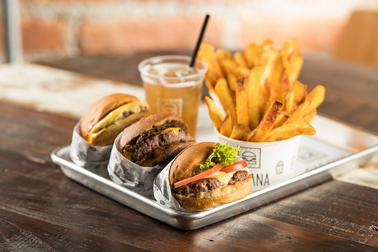
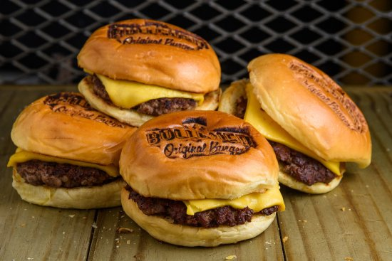
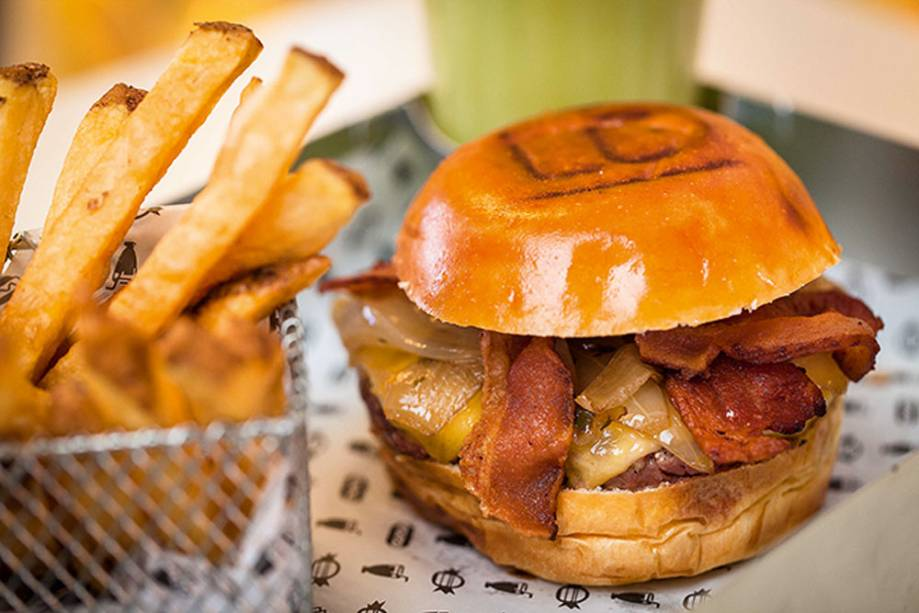
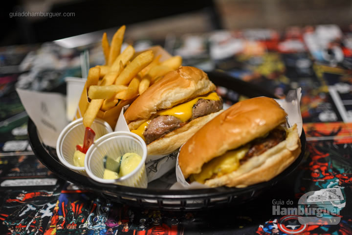

During the last 10 years, there has been a spike in these small concept hamburger places popping up all around São Paulo - and it does not seem to be ending. Each new restaurant with their own concept, redesigning the classic hamburger and french fries meal into a gourmet culinary experience.
 Basically the Brazilian revamped 'high-end' Shake Shack (cabana literally means shack in Portuguese). All of their burgers are incredible, served with their homemade sauce alongside some delicious french fries.
*At all these restaurants I recommend any hamburger, along with the fries with the house mayo.Hamburger of your choice, batatas fritas (usually the house ones are the best) accompanied by the house mayo.
 Incredibly consistent, whether in store or delivery experience, the fries always arrive in perfect condition - not soggy - and the burgers warm. The meat and combinations will melt in your mouth, while filling your heart with that warmth only a burger can give.
 A chain restaurant with multiple locations, which is just a blessing because its really good. With a variety of burgers to choose from and personalize (bread, condiments, etc.), you can also order full plates of food and delicious hotdogs.
 They are known for doing the classic very well along with being innovative with their burgers. They have menu items called 'waffle burger' and also do burgers with deep fried cheese... they are always inventing new ways to make their burger 'stunt' even more.
All intellectual property at this website is in the public domain or is the property of the site-owner.
Sitemap